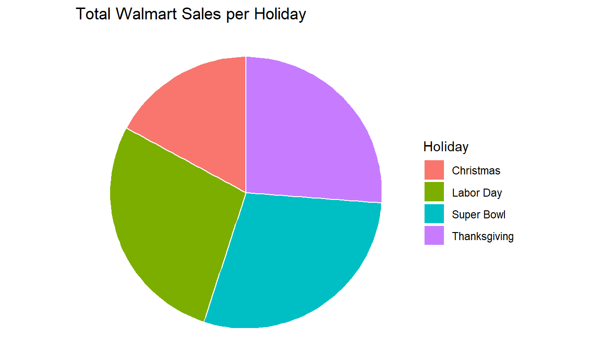

Utilizing SQL, R, and Python to analyze Walmart sales.
This project is currently being re-written. There are major changes in progress. First, I am looking to include more in-depth and statistical analysis on how sales correlate with every factor, which means that the code and analysis of insights are changing and updated on a daily basis. Second, I am changing the format of this report to be more similar to a business case study. Thus, sections are being reorganized and contain imperfect writing. Third, because of the following changes, the beautification of charts and tables are currently not the main priority. Please proceed with this in mind.
This project focuses on analyzing raw data from this dataset, which tracks the weekly sales of 45 Walmart stores over 2 years! It also tracks external factors like whether the week contained a holiday, the CPI, and the unemployment rate of the region.
First, the data is cleaned using pandas as we want to make sure that this data is easy to deal with. The primary goal of cleaning is to standardize the data by rounding values and removing missing values.
#import
import pandas as pd
df = pd.read_csv('Walmart_sales.csv', parse_dates=['Date'], dayfirst=False)
#sort by store number and then date
df.sort_values(by=['Store', 'Date'])
#standarize dates to mm-dd-yyyy
df['Date'] = pd.to_datetime(df['Date'], format='%d-%m-%Y').dt.strftime('%m-%d-%Y')
#rounding data
df.round({'Weekly_Sales':2, 'Temperature':0, 'Fuel_Price':2, 'CPI':3, 'Unemployment':3})
#removing missing values
df.dropna
#create cleaned csv
df.to_csv('./WalmartSalesClean.csv')After cleaning, the data appears like so:
Now that the data has been cleaned, we can use SQL and R to explore this data.
Holidays are notorious for driving up sales as Walmart often runs promotional markdown events to incentivize purchases!
The (repeating) holidays that appear in this data are:
With these holidays, it is implied that the curator of data would have been American, and this data could’ve been taken from American stores. However, the geographical location of these stores are not contained within the dataset.
First, let’s look at which days had the highest profit:
ALTER TABLE WalmartSalesClean
ALTER COLUMN Holiday_Flag Int;
--filtering for holiday flags and sorting
SELECT Date, SUM(CAST(Weekly_Sales AS FLOAT)) AS Weekly_Sales
FROM WalmartSalesClean
WHERE Holiday_Flag='1'
GROUP BY Date
ORDER BY Weekly_Sales DESC;It seems like Thanksgiving (for all stores) consistently ranks the highest amongst all the holidays!
But, this isn’t specific enough for me. Let’s find the total sales per holiday so that we can have a more accurate comparison!
SELECT
CASE
WHEN Holiday = 02 THEN 'Super Bowl' --changing months to holiday names
WHEN Holiday = 09 THEN 'Labor Day'
WHEN Holiday = 11 THEN 'Thanksgiving'
WHEN Holiday = 12 THEN 'Christmas'
END AS Holiday, SUM(Weekly_Sales) AS Weekly_Sales
FROM ( --subquery to have two GROUP BY statements
SELECT SUBSTRING (DATE, 1, 2) AS Holiday, SUM(CAST(Weekly_Sales AS FLOAT)) AS Weekly_Sales
FROM WalmartSalesClean
WHERE Holiday_Flag='1'
GROUP BY Date
) AS temptable
GROUP BY Holiday --Summarizing and reordering data
ORDER BY Weekly_Sales DESC
Despite Thanksgiving dominating the upper echelons of highest individual store profit, it seems like people spend the most on the Super Bowl! Perhaps, it boils down to the cultural significance of Thanksgiving, where it “symbolizes intercultural peace, America’s opportunity for newcomers, and the sanctity of home and family”.1 I’m more of the opinion that it’s an opportunity to invite all your friends and family and spend the entire day cooking – that means food costs can balloon quickly!
-- highest unemployment rate
SELECT TOP 6 Store, avg(CAST(Unemployment AS decimal)) AS Unemployment, avg(CAST(Weekly_Sales AS decimal)) AS Weekly_Sales
FROM WalmartSalesClean
GROUP BY Store
ORDER BY Unemployment desc, Weekly_Sales desc -- need to use weekly sales as a parameter as stores may have the same unemployment rate| Store | Unemployment | Weekly_Sales |
|---|---|---|
| 12 | 13.116483 | 1009001.6 |
| 28 | 13.116483 | 1323522.2 |
| 38 | 13.116483 | 385731.7 |
| 34 | 9.934804 | 966781.6 |
| 43 | 9.934804 | 633324.7 |
| 29 | 9.806385 | 539451.4 |
-- lowest unemployment rate
SELECT TOP 6 Store, avg(CAST(Unemployment AS decimal)) AS Unemployment, avg(CAST(Weekly_Sales AS decimal)) AS Weekly_Sales
FROM WalmartSalesClean
GROUP BY Store
ORDER BY Unemployment, Weekly_Sales desc| Store | Unemployment | Weekly_Sales |
|---|---|---|
| 23 | 4.796014 | 1389864.5 |
| 40 | 4.796014 | 964128.0 |
| 4 | 5.964692 | 2094713.0 |
| 8 | 6.091846 | 908749.5 |
| 9 | 6.099881 | 543980.6 |
| 5 | 6.295406 | 318011.8 |
Interestingly, there’s not a strong correlation between high unemployment and low weekly sales. I’d expect that places with higher unemployment meant that consumers had less disposable income to spend at Walmart. But, Walmart is known for having super cheap products and consumers could’ve primarily bought inelastic goods and other necessities.
It could also be that Walmart’s penetration pricing worked too well. Walmart is notorious for significantly impacting the local economy of the neighborhood, positively and negatively. On one hand, low prices means that consumers can afford more things in a one-stop location and stores near the Walmart get more business due to the influx of foot traffic. On the other, Walmart is known for hiring many workers and paying minimum wage, as well as displacing small businesses due to their low prices (and subsequently, small profit margins) with their pricing. These margins are things that only large corporations can withstand, while small businesses simply can’t afford to compete.
The positive and negative effects differ depending on the neighborhood that Walmart enters, with this data being a good example of the impacts that Walmart can have.
It should also be noted that this data comes from 2010 - 2012 – aftermath of the Great Recession. Pre-recession, unemployment was at 4.7% in America. However, between 2010 - 2012, unemployement was at a high of 9.8% in January of 2009 and decreased until reaching a low of 7.7% in November 2012.2
We can also use statistics to back up these claims by checking the correlation between weekly sales and other factors. This gives us insight into the relationship between each of the variables.
The sample Pearson correlation coefficient was used to determine whether there was a linear correlation between the two sets of data. The coefficient ranges from \(-1\) \(\le\) \(r_{X,Y}\) \(\le\) \(1\), where \(-1\) means a perfect negative linear relationship (as weekly sales go up, the other variable goes down) and \(1\) means a perfect positive linear relationship (as weekly sales go up, the other variable goes up.)
Subsequently:
Based on the above analysis, the following relationships are predicted:
Using
\(r_{xy}={\frac {n\sum x_{i}y_{i}-\sum x_{i}\sum y_{i}}{\sqrt{(n\sum x^2 - \sum x \sum x)(n\sum y^2 - \sum y \sum y)}}}\)
The sample Pearson correlation coefficient calculated is:
-- calculating the Pearson coefficient for weekly sales and unemployment. Replacing the y value (in this case, unemployment) with the other factors would yield the coefficient for that specific factor
rawdata AS ( -- calculating expectation
SELECT Unemployment AS x, Weekly_Sales AS y, Unemployment*Weekly_Sales AS xy, Unemployment*Unemployment AS xsquared, Weekly_Sales*Weekly_Sales AS ysquared
FROM corrdata
),
pdata AS ( -- reorganizing data
SELECT SUM(x) AS sumx, SUM(y) AS sumy, SUM(xy) as sumxy, SUM(xsquared) as sumx2, SUM(ysquared) as sumy2, COUNT(x) as n
FROM rawdata
)
--- covariance(xy) / (std. dev. x) * (std. dev. y)
SELECT (n*sumxy - sumx * sumy) / (sqrt((n*sumx2 - sumx*sumx)*(n*sumy2 - sumy*sumy))) AS "Pearson's Correlation"
FROM pdata